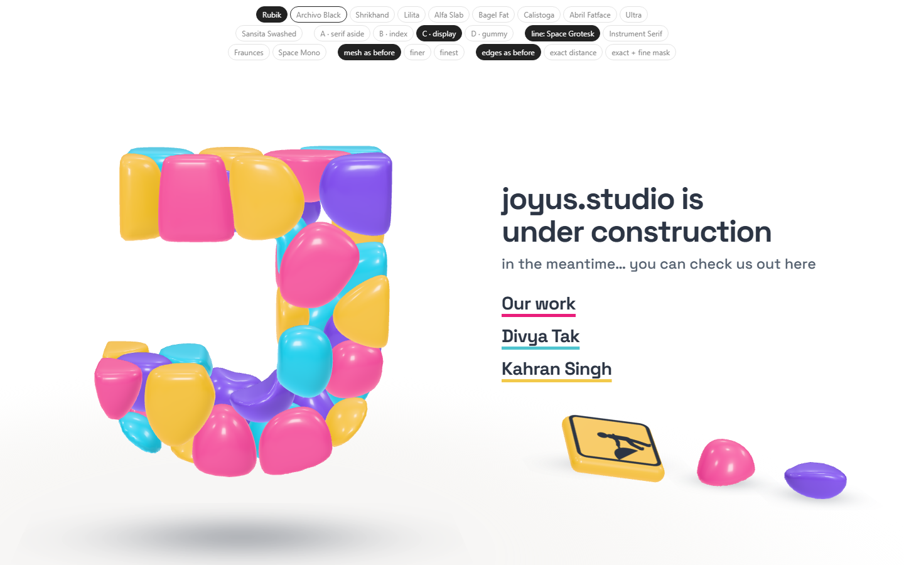
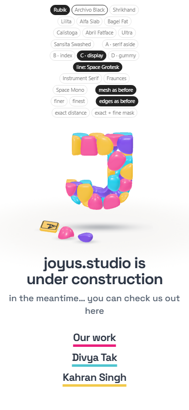
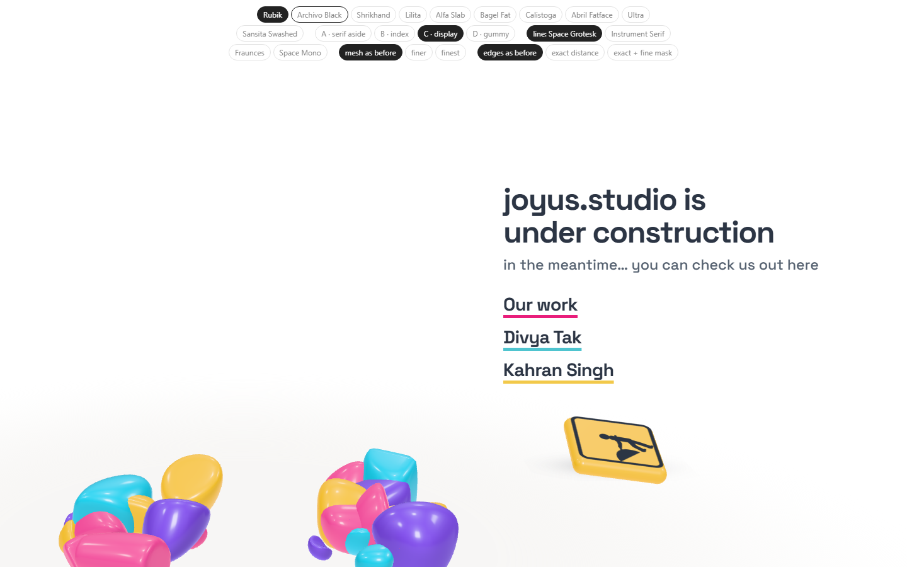
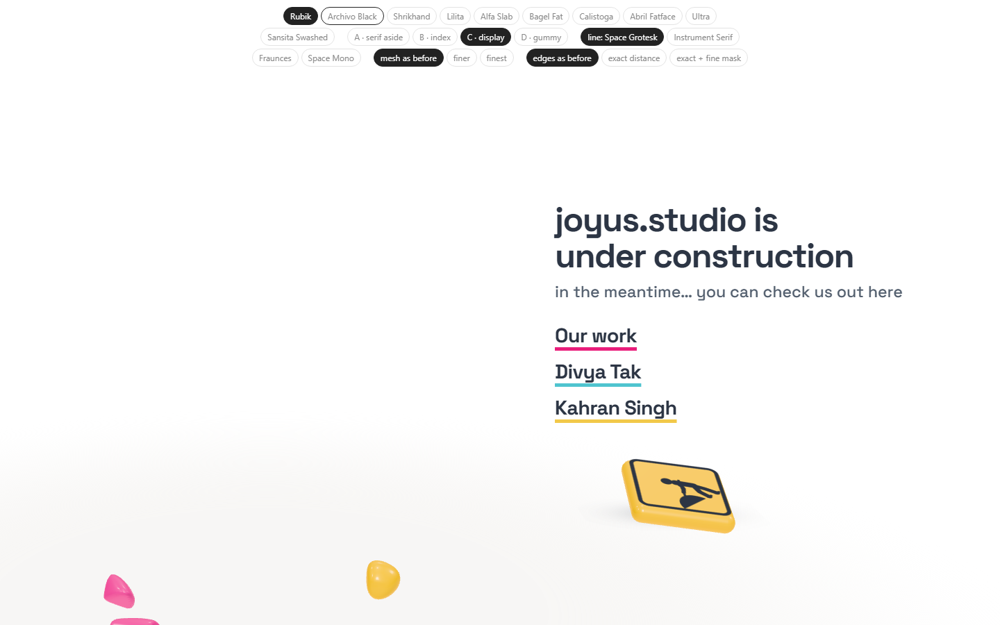

Study 36 · 13 October 2026
The site, under the words
Your sketch's last mark: the sign and the fallen stones leave the J's column and sit bottom right, under the links. The J alone fills its column now.
Open the page

After a cycle


Open
- Where exactly under the words, and how big.
Test: page-test.mjs, 54 checks in a browser; read by check.cjs.